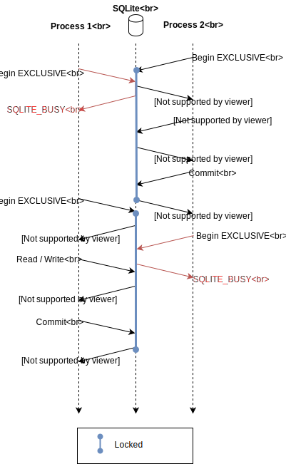

SQLite is a lightweight C library that provided a relational database storage engine. Most browsers and application use sqlite database to store data. There are many reasons why you should use sqlite database as explained here. When you use sqlite database, you can store data in a file or in memory. The main challenge arises when you try to access the file while it is being used in another process. This is where the database locking mechanism comes in.
 Read more hereDevelopers may inject a dll into an application to access the application's database using LoadLibrary, For penetration testers they may inject a dll reflectively their own loader for stealth. The dll will run under the same process context as the application. The dll will be able to access the database and perform operations on it. There might occur a situation where the dll and the application are trying to access the locked resource at the same time. This may cause the application to crush which is not good for the developer and the penetration tester.
The solution is rather very simple. The dll will have to open the database file using the function sqlite3_open.
Depending on whether the path to the database is a UTF-16 unicode(sqlite3_open16()) or a UTF-8 ascii(sqlite3_open()) string, the function will have to be called differently.
This functions will be able to access the database but they may cause the application to crash. We need a function that will allow us to set the flags to the database file.
According to the documentation we will have to use sqlite3_open_v2(const char *filename, sqlite3 **ppDb, int flags, const char *zVfs).
We can use the flag #define SQLITE_OPEN_READONLY 0x00000001 to open the database in read only mode.
Other flags may be used according to the need of the dll. The beauty is that when you try to open with a flag that is in use by the application,
the function will return an error code. The vfs parameter can be set to a null in our case if we are only trying to read.
Some functions can be used only in different use cases. sqlite3_open may have worked in some cases, where it was the sole owner of the database, but operating in the same context as the host process was causing the application to crush. This was a runtime error and the application was not able to recover. The solution is to use the sqlite3_open_v2 function.